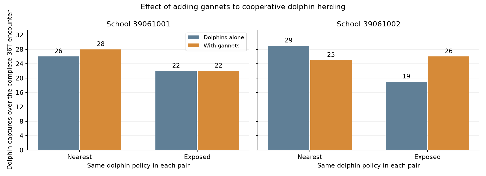
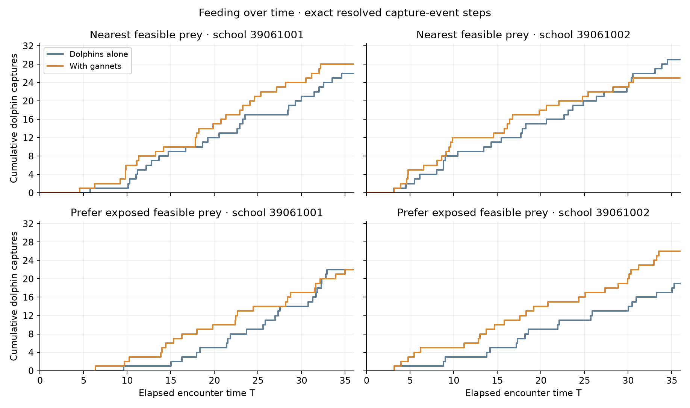

No policy currently shows a positive dolphin feeding difference in both completed school pairs. Assess the school-specific differences below; a pooled gain alone does not establish consistent facilitation.
8 of 8 declared encounters and 4 of 4 matched pairs passed read-only analysis. Each completed case starts with 160 fish and 12 dolphins and runs for 36T (28,800 native steps). Mixed cases add three gannets. This is a descriptive test on 2 development school(s) with one capture seed.
Both policies use the same simple cycle: maintain herding/search motion while close to currently observed prey, accumulate 2T of continuous qualifying proximity, launch one physically feasible strike, complete handling or recovery, and return to herding. The proximity clock requires a currently observed fish within the existing threat radius; it is a local pressure proxy, not proof that a cohesive school has been formed. Losing proximity resets the clock. Fragmented or isolated prey can remain eligible.
The nearest policy selects the closest feasible fish. The exposed policy first prefers the feasible fish with the fewest neighbors within radius 2, then uses predicted intercept effort and distance to break ties. Dense fish remain eligible: exposure is a preference, not an additional permission threshold. Both policies have identical herding duration, physical launch checks and recovery rules. Gannet dives do not directly unlock feeding.
Each baseline is the same dolphin policy without gannets. Difference = captures with gannets minus captures alone. Percentage change is undefined if the dolphin-only count is zero. Food per dolphin per T includes the whole encounter: herding, waiting, attacks, handling and recovery.
| School | Policy | D food alone | D food with G | Difference | Change % | G food |
|---|---|---|---|---|---|---|
| 39061001 | nearest | 26 | 28 | 2 | 7.692 | 6 |
| 39061001 | exposed | 22 | 22 | 0 | 0.000 | 9 |
| 39061002 | nearest | 29 | 25 | -4 | -13.793 | 6 |
| 39061002 | exposed | 19 | 26 | 7 | 36.842 | 8 |

| Policy | Schools | D food alone | D food with G | Difference | Per-school differences | G food |
|---|---|---|---|---|---|---|
| nearest | 2 | 55 | 53 | -2 | 39061001: +2; 39061002: -4 | 12 |
| exposed | 2 | 41 | 48 | 7 | 39061001: +0; 39061002: +7 | 17 |
| School | Policy | Actors | D food | D launches | D contacts | Food / launch | Qualifying proximity: dolphin-T | Min pre-strike proximity T | Mean selected neighbors | Recorded containment: dolphin-T |
|---|---|---|---|---|---|---|---|---|---|---|
| 39061001 | nearest | D | 26 | 52 | 35 | 0.500 | 120.530 | 2.000 | 4.442 | 120.506 |
| 39061001 | nearest | DG | 28 | 52 | 41 | 0.538 | 123.004 | 2.000 | 4.019 | 122.976 |
| 39061001 | exposed | D | 22 | 56 | 32 | 0.393 | 123.805 | 2.000 | 0.821 | 123.781 |
| 39061001 | exposed | DG | 22 | 54 | 29 | 0.407 | 128.707 | 2.000 | 0.630 | 128.679 |
| 39061002 | nearest | D | 29 | 57 | 42 | 0.509 | 126.754 | 2.000 | 4.526 | 126.726 |
| 39061002 | nearest | DG | 25 | 49 | 36 | 0.510 | 120.574 | 2.000 | 4.204 | 120.553 |
| 39061002 | exposed | D | 19 | 46 | 26 | 0.413 | 113.597 | 2.000 | 1.109 | 113.576 |
| 39061002 | exposed | DG | 26 | 46 | 34 | 0.565 | 122.199 | 2.000 | 0.565 | 122.181 |
Qualifying proximity time integrates the committed cycle start/reset/launch records, including a continuing clock at the encounter end. It is a sum across dolphins and has native-timestep resolution. Recorded containment time is the existing runner phase-based classification of actual resolved motion; it need not equal qualifying proximity. Neither measure alone demonstrates successful compression or a causal effect on fish. Captures per launch count actual removals; selecting a fish is not a capture, and incidental contact can capture a different fish during a bout.

| School | Policy | Actors | Live fish | Largest group / survivors | R90 | Survivors within route envelope |
|---|---|---|---|---|---|---|
| 39061001 | nearest | D | 134 | 0.851 | 6.663 | 0.000 |
| 39061001 | nearest | DG | 126 | 0.857 | 6.878 | 0.000 |
| 39061001 | exposed | D | 138 | 0.899 | 6.680 | 0.000 |
| 39061001 | exposed | DG | 129 | 0.922 | 6.597 | 0.000 |
| 39061002 | nearest | D | 131 | 0.931 | 5.972 | 0.000 |
| 39061002 | nearest | DG | 129 | 0.930 | 6.548 | 0.000 |
| 39061002 | exposed | D | 141 | 0.865 | 7.057 | 0.000 |
| 39061002 | exposed | DG | 126 | 0.849 | 6.710 | 0.000 |
R90 and the largest-component fraction describe surviving fish. Route-envelope retention measures location relative to the original moving reference and is separate from cohesion. The CSV supplies retention using both initial-fish and surviving-fish denominators.
The gannet policy is unchanged from the preceding paired study: global observation of underwater fish within the existing depth limit; DBSCAN radius 2 and minimum neighborhood count 4; probabilistic cluster choice weighted by accessible fish count; a dense accessible target inside the selected cluster. When no eligible cluster exists, the bird selects the densest accessible neighborhood, or withholds selection if no accessible fish exists. Its private target random stream and physical dive/contact/recovery rules are retained.
42 dives have descriptive same-survivor response summaries for 0.5–1.5T after entry with at least four tracked survivors. The response CSV summarizes each dive once. Simultaneous dolphin and fish motion prevent interpreting these before/after measurements as isolated causal dive effects.
Conditional oral-contact success remains 0.7; this is not a 70% success rate per dive or pursuit. The 2T herding interval, proximity proxy and prey preferences are explicit model assumptions. There is no fitted density penalty, post-dive capture bonus or direct requirement to wait for gannets. The results test the net effect of adding gannets under these assumptions.
Herding is collaboration within the pod. A positive paired difference indicates simulated facilitation of dolphin feeding by gannet presence. Reciprocal benefit also requires a gannet-only comparison. These two schools do not establish statistical significance, numerical convergence or long-term persistence. Earlier policy outcomes are not reused as matched baselines.
All included case seals, frozen scientific sources, full horizons and original accounting/private-stream audit receipts passed. Fish and dolphin starts, capabilities and capture streams match within each school; each policy pair has identical initial dolphin controller state. No-gannet cases have no bird events. Every actual dolphin launch matches one committed cycle launch after at least 2T of continuous qualifying proximity; exposed-policy launches select the minimum recorded neighbor count among feasible candidates. Analysis performs no native model steps.
Paired CSV · Case outcomes and cycle diagnostics · Aggregate CSV · Bird responses · Audit · Both policies: school 39061001 replay